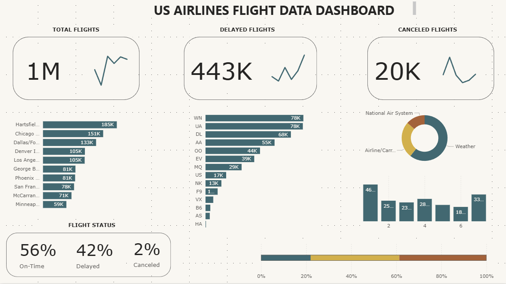

Overview
This final task focuses on working and navigating through Power
BI by building a complete reporting workflow. It covers data
acquisition, data cleaning, star schema modeling, DAX-based
calculations, and the design of visuals that communicate the
computed measures clearly and effectively.
01
Data Acquisition and Preparation
- Download and review the `flights_data.csv` and `airports.csv` datasets
- Clean and prepare the flat CSV data before modeling
- Make sure all columns are properly labeled
- Replace blank values under cancellation reason with `Security` when needed
- Remove unnecessary columns, especially those with blank entries
- Split the required dimension tables for airline, cancellation reason, and airports
- Add the `airports.csv` file as an additional data source
- Verify that the final structure contains 1 fact table and 3 dimension tables
02
Data Model and DAX Measures
- Design the data model using a star schema structure
- Create the necessary calculated columns and measures using DAX
- Organize all measures into a dedicated folder in Model view
- Create a `STATUS` calculated column to classify flights as Canceled, Delayed, or On-Time
- Compute measures such as Total Flights, % Canceled, % Delayed, and % On-Time
- Add supporting measures for Canceled Flights, Delayed Flights, and On-Time Flights
- Include additional measures for Total Diverted Flights, Total On-Time Flights, and Total Cancelled Flights
03
Visualization and Final Design
- Create the necessary visuals for all computed measures
- Present flight performance and cancellation insights using appropriate charts and summaries
- Explore the formatting tools of Power BI visuals for a cleaner report presentation
- Finalize the dashboard layout so the report is readable, structured, and professional
04
Output Files
Data Model

Dashboard
